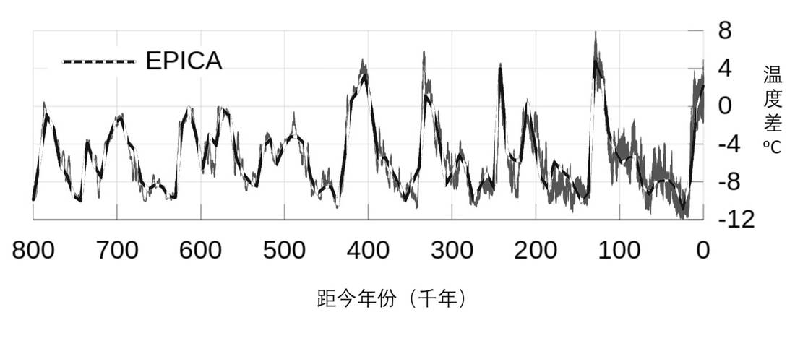

冰期与间冰期的交替怎样塑造非洲的环境？智人怎样在变化中走出非洲？
智人走向世界，既依靠前人积累的技术，也不断在新环境中摸索。怎样御寒、寻找食物、加工陌生的材料，是一代代迁徙者面对的具体问题。这段漫长经历留给技术创新的一条重要启示是：因地制宜。
我们是谁？我们从哪里来？不同文化用创世故事回答这些问题。在犹太教和基督教的传统中，亚当与夏娃的故事讲述了人类的起源。科学则从化石、遗物和遗传信息中，寻找能够检验的答案。
达尔文（Charles Darwin，1809—1882）于1859年出版《物种起源》，提出以自然选择解释生物演化，并在1871年的《人类的由来》中系统讨论人类演化。今天的研究表明，人类与其他现生类人猿拥有共同祖先，各个分支在不同环境中沿着各自的路径演化。
一个多世纪以来，考古学、古人类学和遗传学不断补充这幅图景。现有证据支持智人（Homo sapiens）起源于非洲，其形成可能涉及非洲多个地区长期交流的人群。智人曾在不同时期走出非洲：较早的扩散到达西亚，今天大多数非洲以外人群的主要祖源，则与大约六万至七万年前的扩散有关。
这段历史受到气候、食物、地形、人口联系和技术等多种因素的影响。反复出现的生存压力，可能塑造长时段的演化方向；一次干旱、一场冲突，或少数人的选择，又可能改变某一群体的命运。把时间拉长，我们看到一些不断重现的规律；走近具体的迁徙者，历史则充满偶然、曲折和意外。
让我们沿着化石、工具和基因留下的线索，回到远古祖先的生活中，看看他们怎样在移动中学习，又怎样用技术拓展生存空间。
在过去约八十万年间，地球经历了多次冰期与间冰期交替，较长的冷暖旋回大体以十万年为尺度。图1-1显示了南极冰核重建的当地温度变化，为理解这一漫长过程提供了线索。一项研究估计，末次盛冰期的全球平均气温比工业化前低约6摄氏度。约1.17万年前开始的全新世，处于当前间冰期。
图1-1：过去约80万年南极EPICA冰核重建的温度距平。纵轴表示相对基准的当地温差；横轴右端接近现代。

图片来源：Autopilot，CC BY-SA 3.0（https://commons.wikimedia.org/w/index.php?curid=10874222）。
冰期中，大量水储存在陆地冰盖和冰川里，海平面随之下降。末次盛冰期的海平面比今天低一百多米，许多大陆架露出水面。东南亚的马来半岛、苏门答腊、爪哇和婆罗洲曾连成更大的陆地，通往澳大利亚所在萨胡尔大陆的途中则仍有海峡。日本列岛与大陆的连接，也随地区和时期变化。陆地通道与渡海条件的改变，影响着人群的迁徙路线。
东非裂谷系统从阿法尔一带向南延伸至莫桑比克，沿途有高原、湖泊、草原和干旱地带，保存了丰富的人类演化遗迹。非洲其他地区也留下重要线索：摩洛哥杰贝尔·伊鲁德发现的早期智人化石约有三十万年历史。不同地区的证据共同提示，智人的形成可能涉及非洲范围内多个人群的长期联系。
祖先的生活紧贴着周围的动植物。他们采集植物、获取动物资源，学习哪些石料适合打制，哪些地点适合停留。木材、兽皮和植物纤维容易腐烂，留下的痕迹远少于石器；今天看见的工具清单，只是当年生活的一部分。
末次间冰期大约在13万至11.5万年前，随后进入末次冰期。冷暖变化也改变了非洲的降水、湖泊和植被，使一些地区变得宜居，另一些地区的资源则收缩。人群在变化中调整活动范围，彼此的联系也随之改变。遗传研究为古代人口的起伏提供了线索，但具体人口数量仍难以确定。
在这样的环境变化中，不同人群逐步扩大活动范围。红海沿岸的海洋资源可能为一些迁徙者提供食物，但沙漠、淡水分布和海峡也构成障碍。能否在新的地方生活下去，取决于人们怎样利用当地条件。
走出非洲有两条常被讨论的通道：北面的尼罗河谷—西奈半岛，以及南面的曼德海峡。海平面较低时，曼德海峡的水面可能变窄、岛屿增多，渡海条件也随之改变。
如果有人从南线渡海，我们可以想象，他们或许把木头、芦苇或其他浮物捆扎起来，载着亲人和简单的工具，驶向看得见却未曾踏足的彼岸。这种简陋的渡海工具，也许承载了人类历史上一次极不平凡的冒险。人类走出非洲的历史可以追溯到更早时期：直立人等的扩散远早于智人，尼安德特人则主要在欧亚大陆演化。
对于后来遍布世界的智人后裔而言，走出非洲堪称“历史一跃”。这一跃打开了广阔的生存空间，也打开了一座座前所未见的创新资源宝库。陌生的动植物、石料和气候，带来危险，也带来新的需求与灵感。从此，许多代人一边迁徙，一边学习怎样在新的世界生活。
本文选自《欲望的力量：人类科技创新简史》（第二版）第 1 章——智人走出非洲：非洲的智人与变化的环境。上一篇：生存温饱创新：必需篇导言；下一篇：尼安德特人与智人：非洲的智人与变化的环境（续）。连载总索引见《欲望的力量》连载总索引。